Navy Suit / Loro Piana
Loro Pianaの生地が纏う、静かな威厳。
ここぞという日に袖を通す
ラグジュアリーな一着。
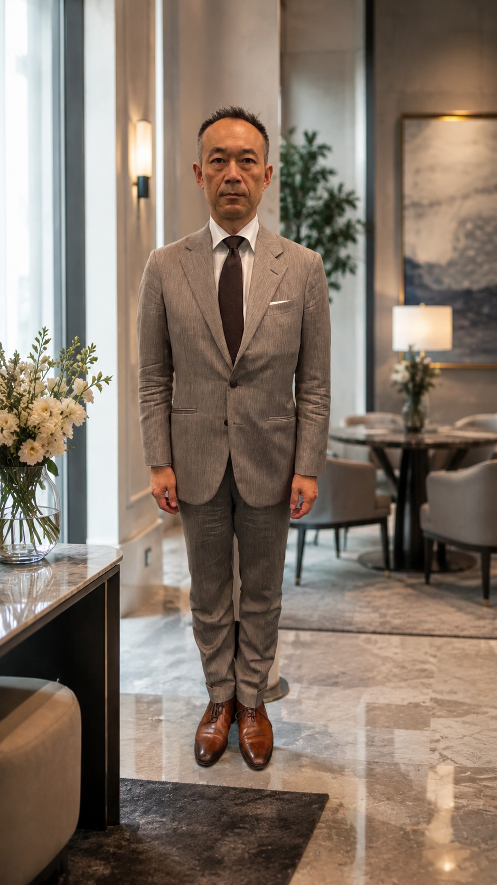
Wool Denim Suit
一見デニムに見える、ベージュのウール生地。
素材の意外性が、着る人に静かな個性を宿す。
知る人だけが気づく、上質な遊び心。
Asymmetric Dot Jacket
ネイビーのドット生地に、別素材でラペルをアシンメトリーに仕立てた一着。
フラップにも生地切り替えを施し、細部まで遊び心を宿らせた。
知る人だけが気づく、大人の個性。
Asymmetric Cloth Vest
左右で異なる生地を纏う、非対称の美学。
ルールを知った上で、越えていく。
人と違う装いを求める方への、一つの答え。
Navy 3-Piece Suit
深みのあるネイビーで仕立てた
スリーピーススーツ。
格式と洗練を兼ね備えた一着。
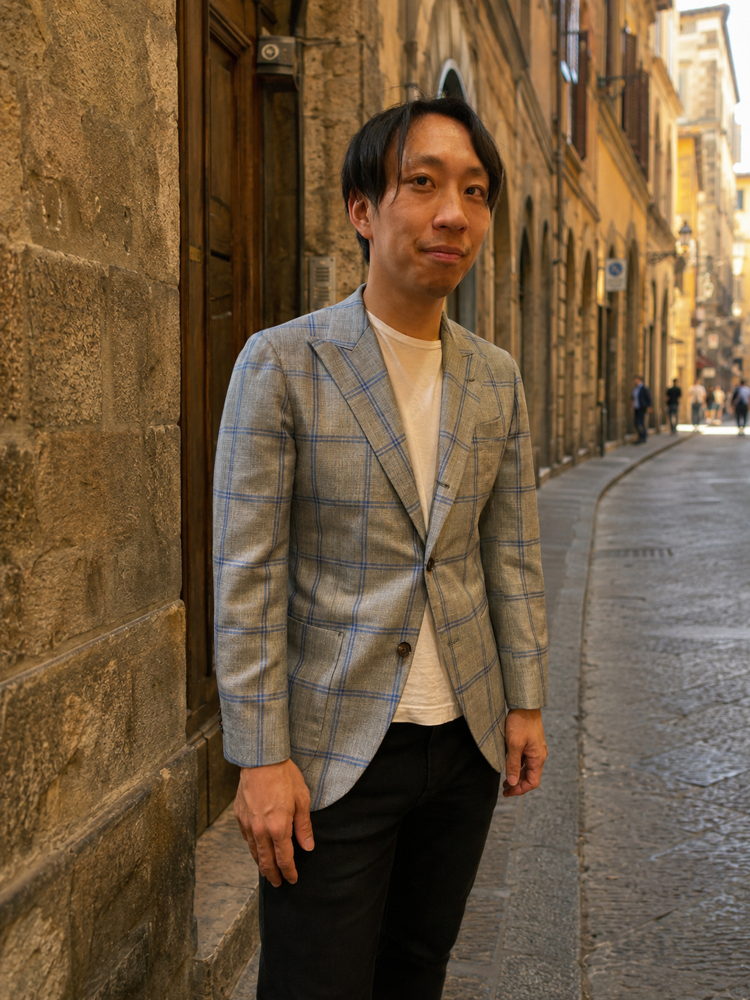
Bespoke Suit
FIEROが手がけた
メンズオーダーの一着。
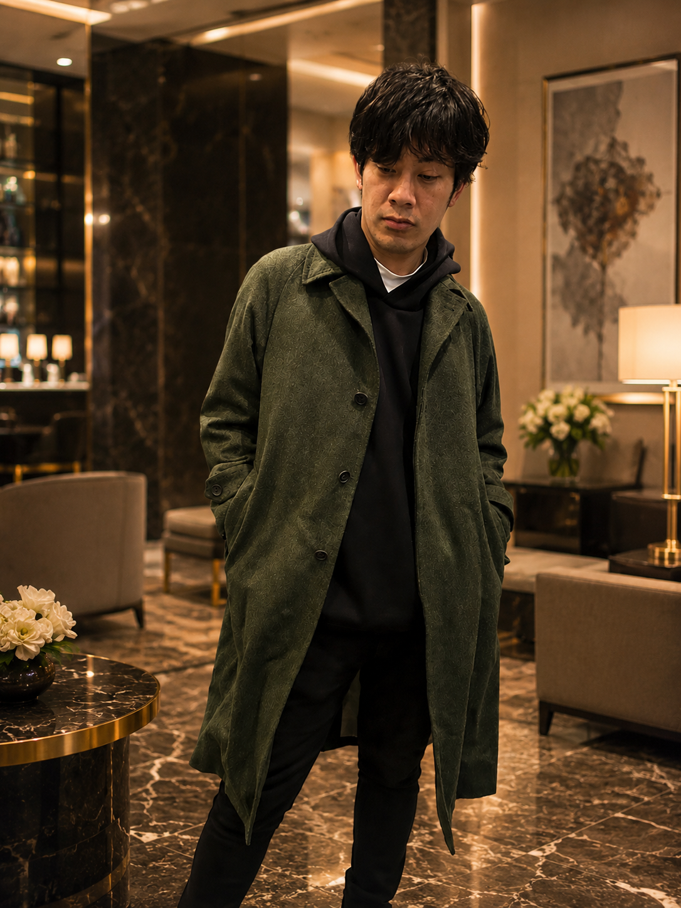
Order Style
FIEROが手がけた
メンズオーダーの一着。
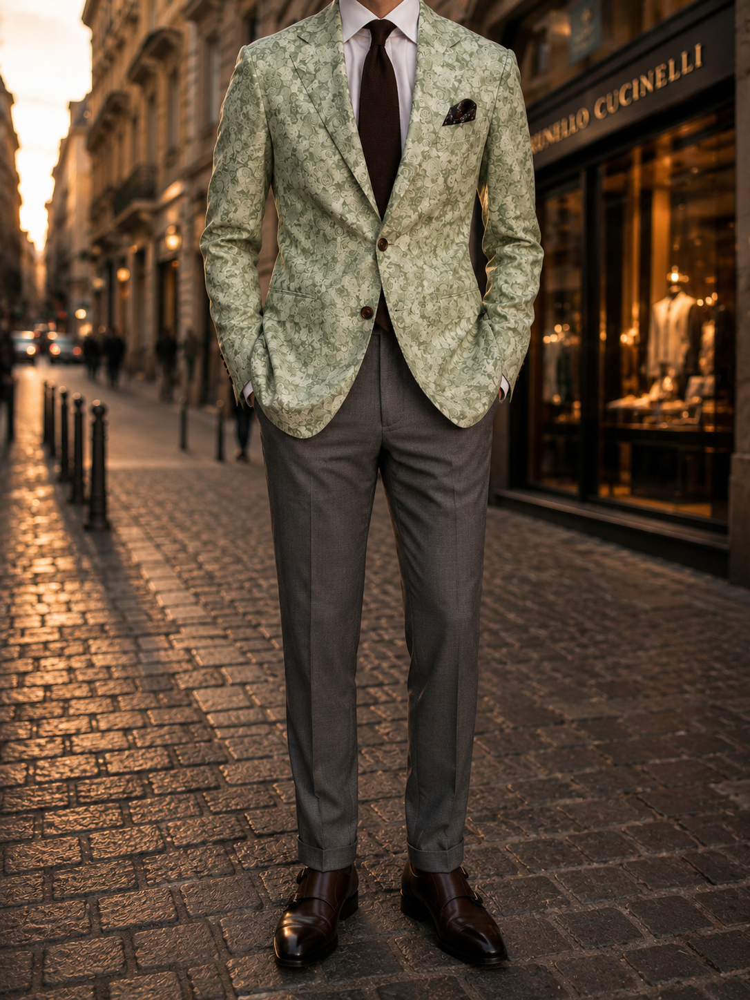
Order Style
FIEROが手がけた
メンズオーダーの一着。
Order Style
FIEROが手がけた
メンズオーダーの一着。
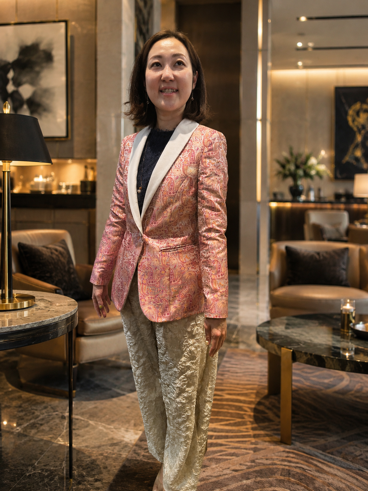
Paisley Jacket & Brocade Trousers
ピンクペイズリーのジャケットに
シルバーブロケードのパンツを合わせた
華やかなレディースセットアップ。
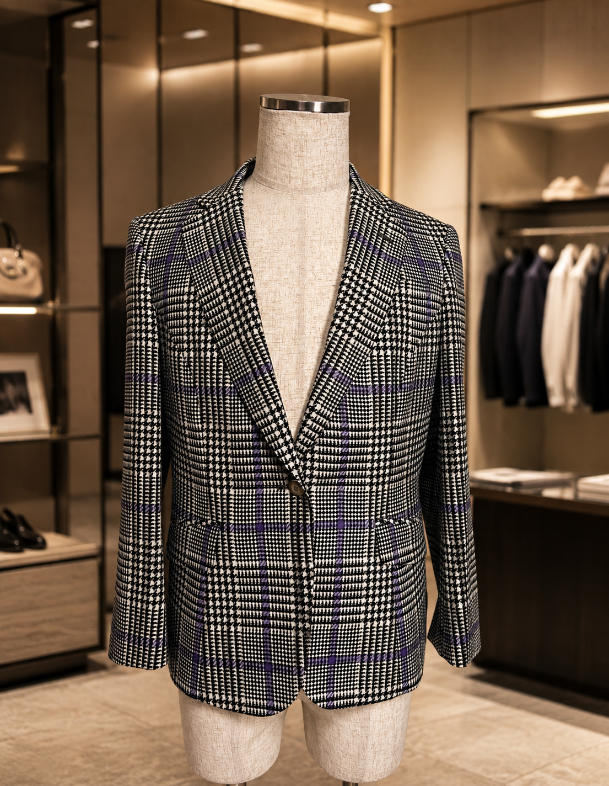
Glen Check Jacket
ブラック × ホワイトのグレンチェックに
ブルーオーバーチェックが映える
シングル1つボタン ジャケット。
Patine Shoes
ベースカラーから滲み出るグラデーションが
美しい、ナチュラル仕上げの一足。
素材そのものが持つ表情を引き出す。
Patine Shoes
こちらはストローク仕上げ。
横に不均一な色を当てこむことで
個性を演出している。
Patine Shoes
色の境界が溶け合うグラデーションが
印象的な存在感ある一足。
パティーヌ技法の醍醐味が凝縮されている。
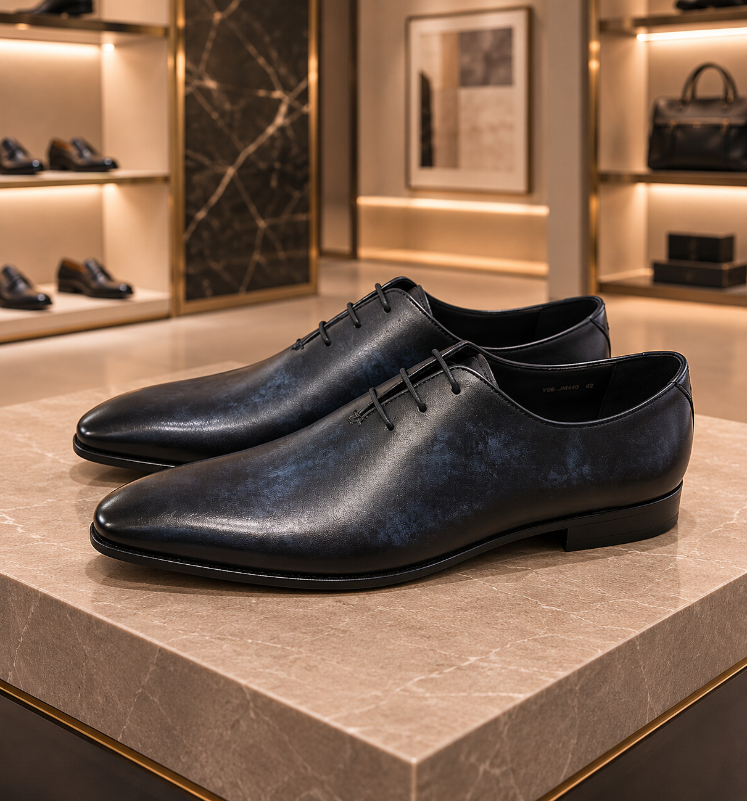
Patine Shoes
深いネイビーを纏ったホールカット。
ストローク仕上げが生む陰影が
夜の装いに静かな気品を添える。
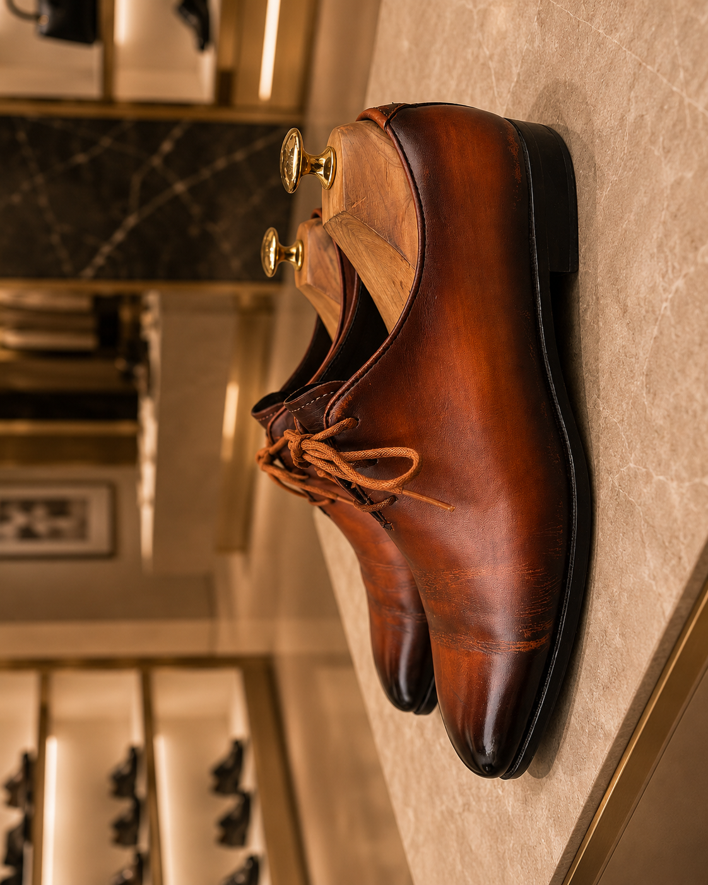
Patine Shoes
ストローク仕上げが生む、色の揺らぎと深み。
継ぎ目のないホールカットが
その表情をさらに際立たせる。
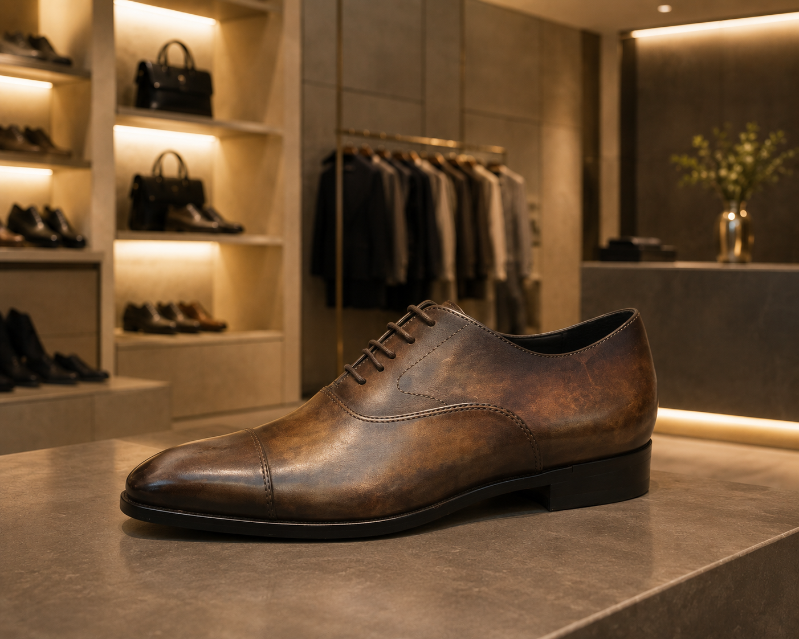
Patine Shoes
FIEROが手がけた
パティーヌオーダーシューズ。
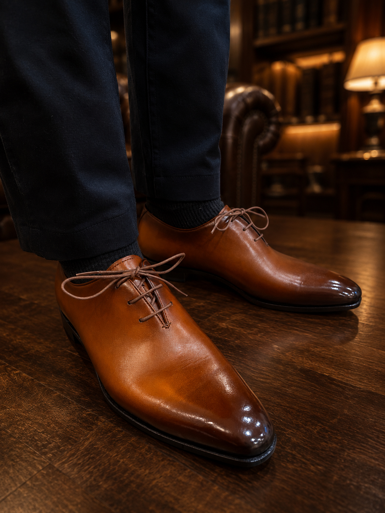
Patine Shoes
大胆な色彩と細部の繊細さが共存する
個性派の一足。
他にはない唯一性を纏いたい方へ。
Leather Bag
上質なレザーとパティーヌ技法が融合した
FIEROのレザーバッグ。
手にするたびに深みを増す、経年変化の美。
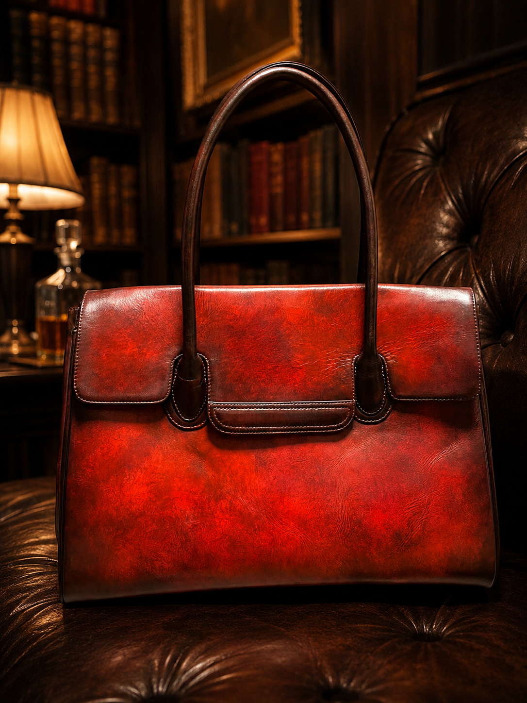
Leather Bag
こだわりの素材と丁寧な仕上げで
作り上げた唯一無二のレザーアイテム。
装いに静かな存在感を添える一品。
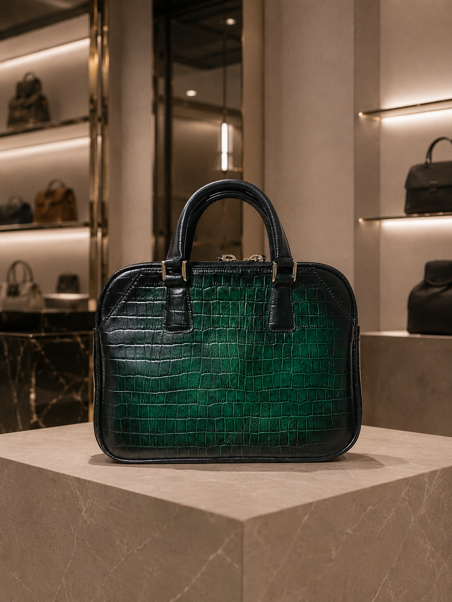
Mini Tote Bag
クロコ型押しのミニトートバッグ。
財布と携帯だけ持ちたい日に。
コンパクトながら、装いを格上げする一品。
Leather Tote Bag
パティーヌ仕上げのブラウントート。
大きめのサイズ感で普段使いに。
使い込むほど深みが増す一品。
Ulster Coat in Baby Camel
ピアチェンツァのベイビーキャメルが纏う
静かな温もりと気品。
素材に語らせる、大人の贅沢。
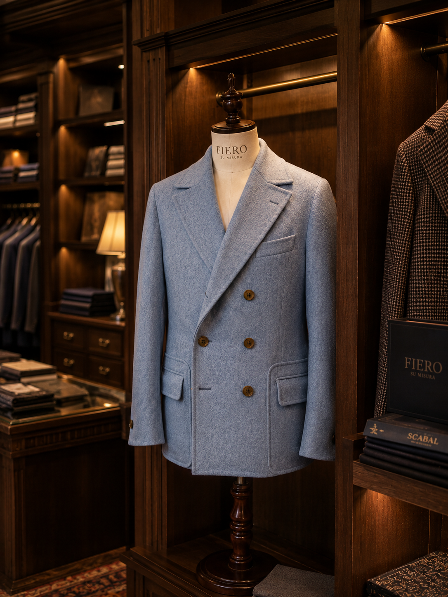
Giaccone
ジャケットとコートの境界で生まれた
イタリア流の一枚。
重ねずに、羽織る。それだけで装いが変わる。

Raglan Coat
ラグランの肩が纏う、静かな余裕。
Aラインをベルトで絞れば、細身の顔も見せる。
見えないところに仕込んだ防寒インナーが、冬の日も確かに守る。
Italy — Color, Fashion & Culture
お客様とファッションと色と文化を
楽しみにイタリアへ。